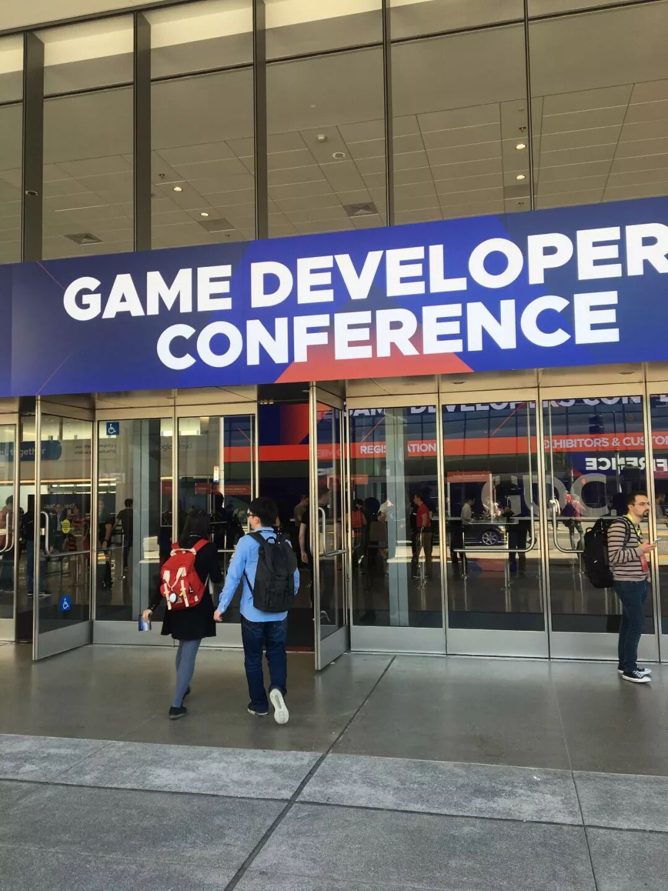
最近刚回公司上班，正好就赶上了一年一度的GDC（Game Developer Conference）。游戏开发者大会（GDC）是游戏界最有影响力的峰会之一，作为Unity公司的一员，自然也有这样的公司福利去蹭一下展会，毕竟就在公司旁边。
那么今年的GDC到底有啥好玩的呢？东西实在太多，就截取我觉得好玩的10个点来说一下吧。
游戏博物馆
GDC上专门设立了一块区域，展出了很多早年的游戏主机以及游戏。
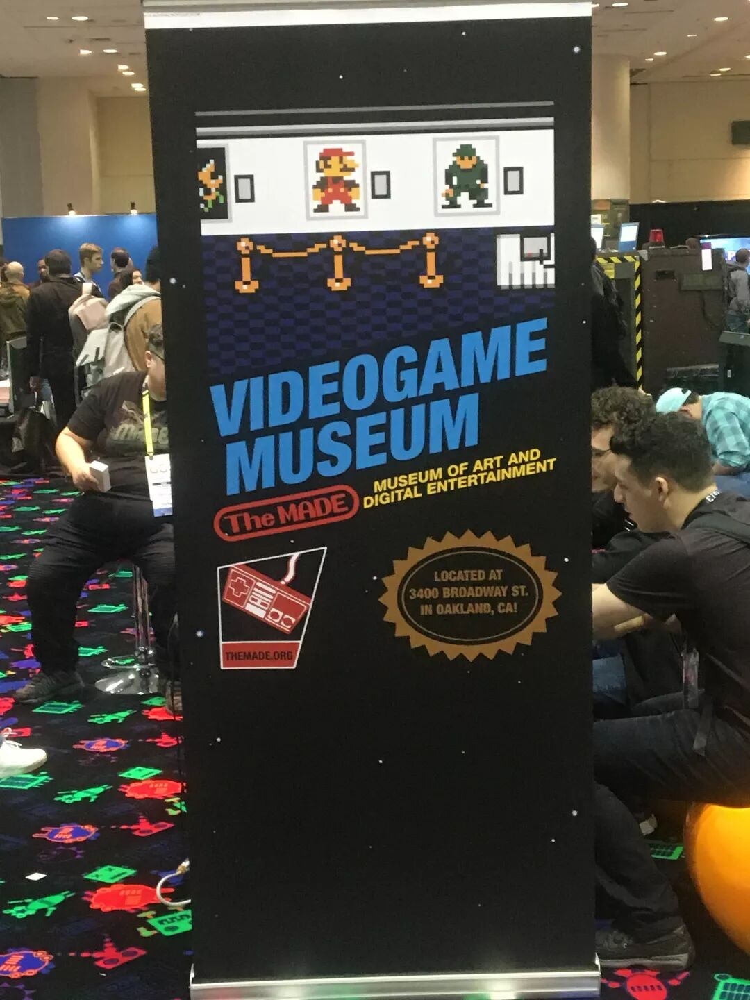
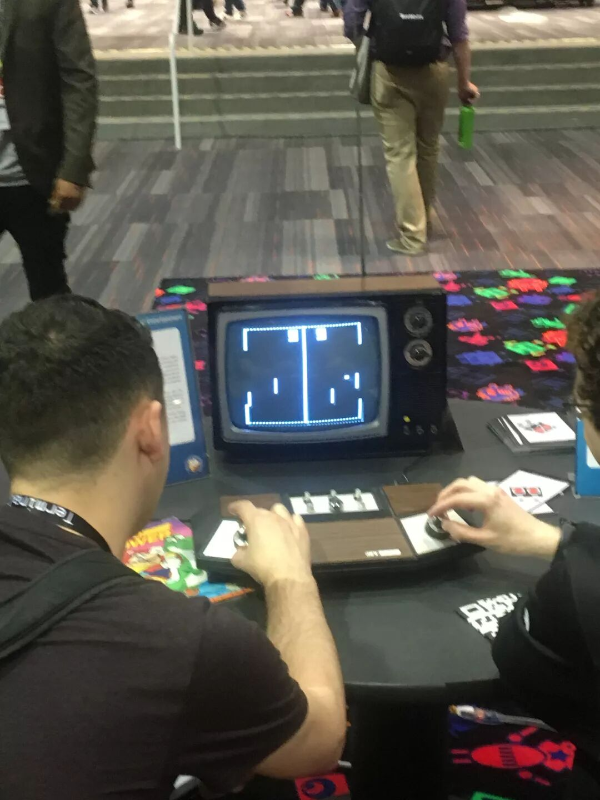
最早的对战游戏，做RL的同学一定不陌生
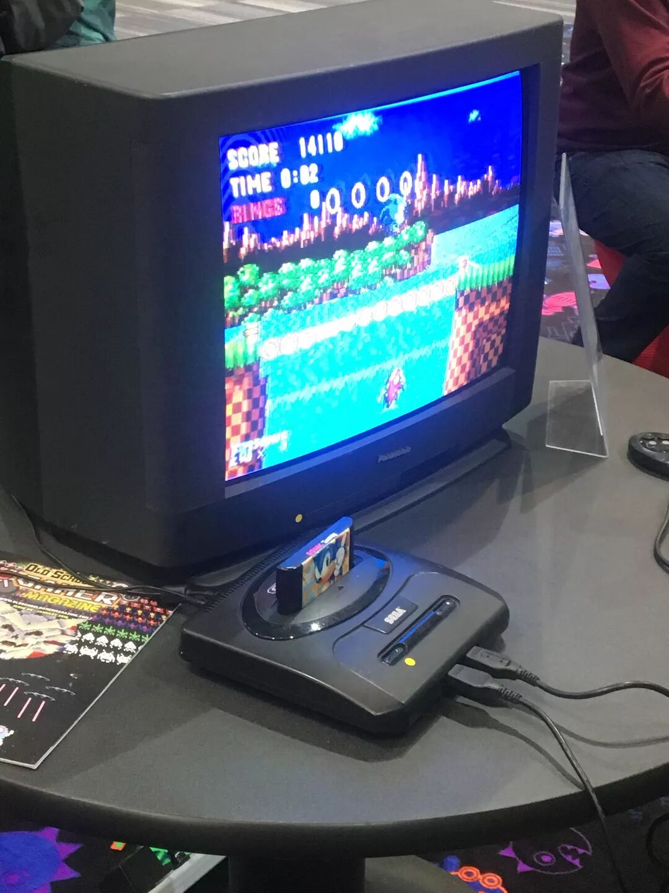
SEGA的MD主机上的刺猬索尼克，记得以前一直在MD的PC模拟器上玩幽游白书等等游戏
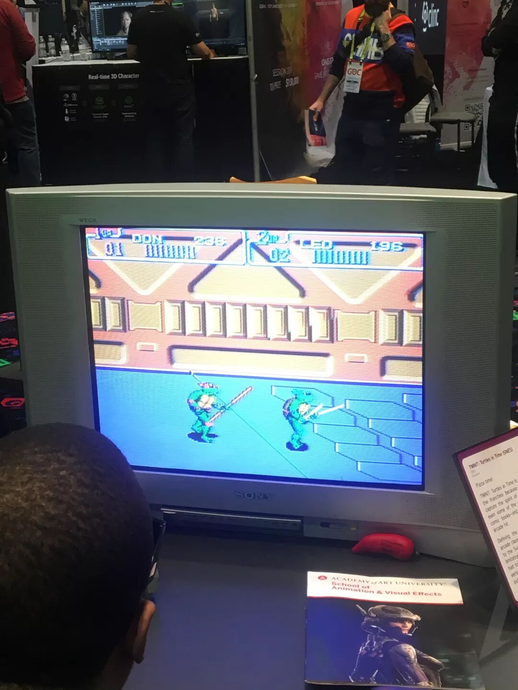
经典的红白机上的忍者神龟（小时候一直让表哥带我玩的）
区块链
别看这是游戏开发者大会，做区块链的也来了。我记得去年的GDC就有国内的一个做游戏发行平台币的来了，今年似乎没有看到，可能是没钱了吧（笑）
不过今年来了著名的交易平台Kraken。他们和著名的曾经把以太网堵死的的CryptoKitties（加密猫）团队合作，一起来GDC展出这种把宠物养成和区块链结合的技术。
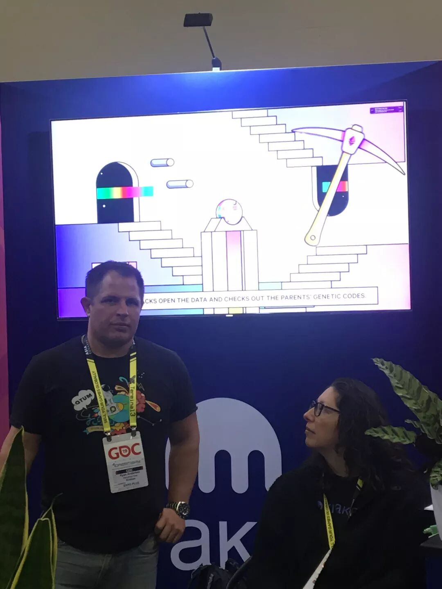
Kraken的字被遮住了，玩币的应该没有不知道他们的吧
除此以外，还有看到一些独立游戏开发者把区块链化的游戏代币做在游戏里面。
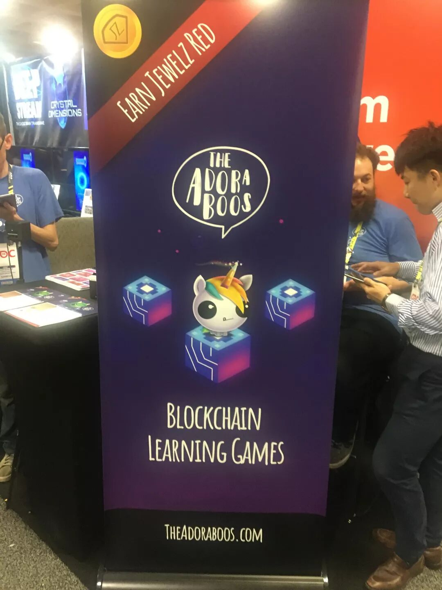
一家做早教游戏的展台
总体来说区块链对游戏开发者来说也算是很非主流的东西，再加上区块链圈子本身也半死不活的，热度相对来说低很多了。
可互动的直播技术
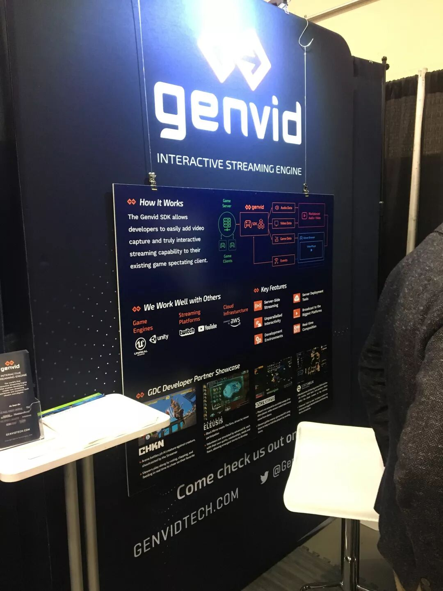
我自己经常会看直播的录播，播的东西很多真的蛮有意思的。不过我还真没有看到主播用过这个技术，可能还不太成熟吧。
这家genvid公司做的是这么一个产品，如果直播平台（或者游戏平台）用了他们的技术，那游戏的观众不仅仅可以观看游戏，还可以与游戏内容自己进行互动。
举个例子，比如有个主播在打英雄联盟，你很想看一下某个物品的属性，你就可以直接点那个物品，你的直播间画面就可以显示给你那个物品的属性。
我觉得这样的技术将是划时代的。你可能觉得看一下物品的属性没啥用处，反正我也不是想要看这个。不过它还可以实现这样的功能。
比如有一个直播在播吃鸡的比赛，要是吃鸡用了这个功能，观众可以直接投票给比赛的选手，甚至得票最高的选手可以得到加成的buff，比如直接给他加一个空投之类的。未来的直播娱乐，甚至电子竞技，可能不再是电竞选手单向地给观众提供娱乐，而可能是双向的，观众也可以参与到娱乐的提供中来。
我觉得这样的场景将会非常有意思非常酷。要知道目前仅仅是弹幕一种观众的参与方式，已经催生出一个这么大的直播市场。
不知道哪个主播会先尝鲜呢！拭目以待。
Pokemon Go之外的虚拟现实游戏
Pokemon Go曾经在全球风靡了那么一下，然后风潮过去以后，似乎再也没有类似的拿得出手的游戏了。
不过我在GDC看到的这款游戏，似乎在美国还蛮流行的。游戏的名字叫Landlord 2。
游戏的创意跟之前另外一款这种基于地理的游戏很像（忘记那个游戏叫啥了，反正是有三方，然后占领附近标志性建筑的），不过里面加入了大富翁的元素。
玩家可以用游戏中虚拟的钱买下在游戏中陈列的附近的真实世界中的大楼，建筑等，然后游戏中不同的建筑可以提供不同的租金，然后你收了租以后就可以买更多的楼。
我看到App Store上面有1万多条评论，要知道美国的appstore上微信也才4.47万评论，可见玩的人真的很多。
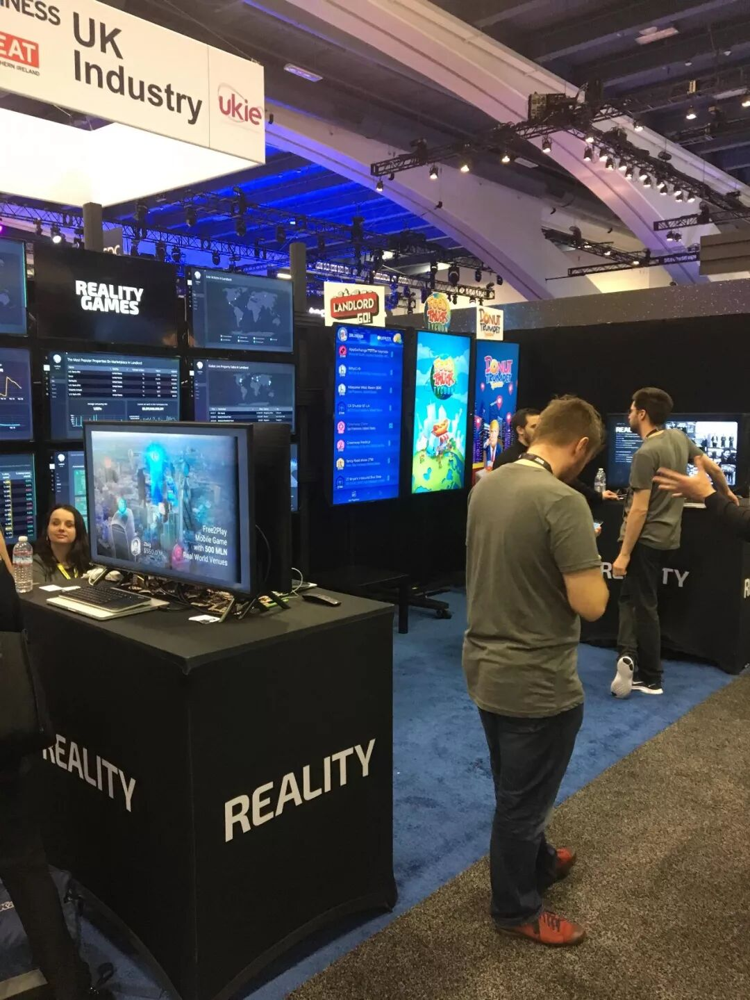
做这个游戏的Reality Studio的展台，他们还做了类似的别的几款游戏
GDC的商店
GDC的官方还专门有个商店，店里有好多好玩的书，像是Unity开发啦，C#入门啦之类的书。
开玩笑，其实里面不仅仅有这些书，还有好多很酷的游戏设计手册。
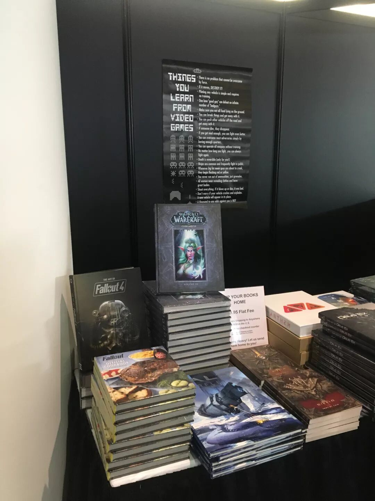
魔兽， fallout等的手册
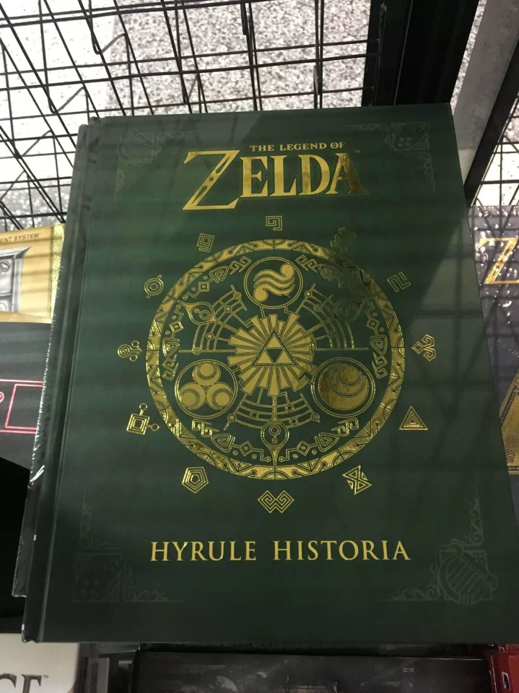
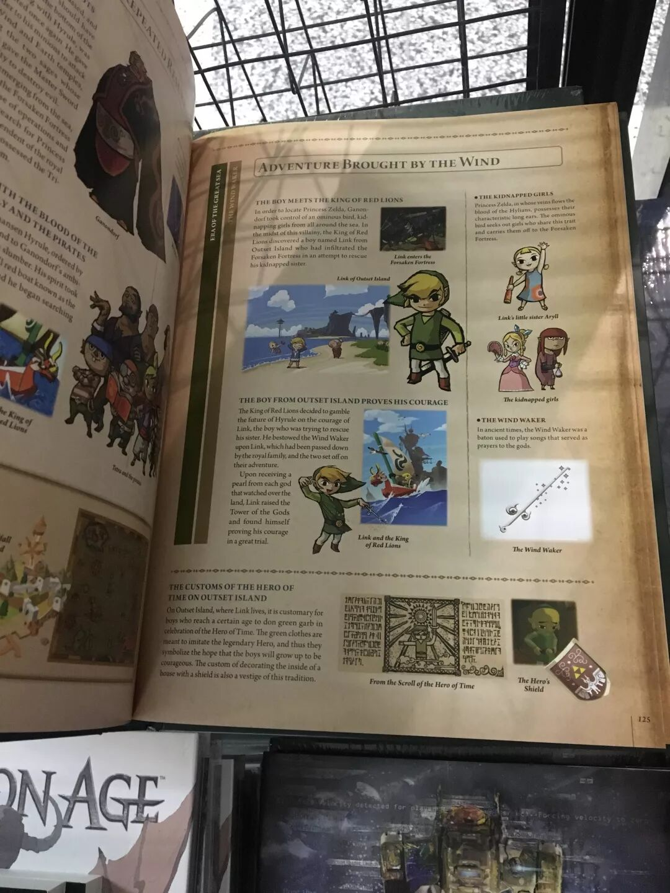
塞尔达的游戏设计手册
美国的游戏专业
不光光游戏厂商们来了，美国的游戏专业院系们也来了。我是看了展才知道原来美国有这么多的学校有这个专业。
犹他大学的游戏专业似乎可以稳定地进前五
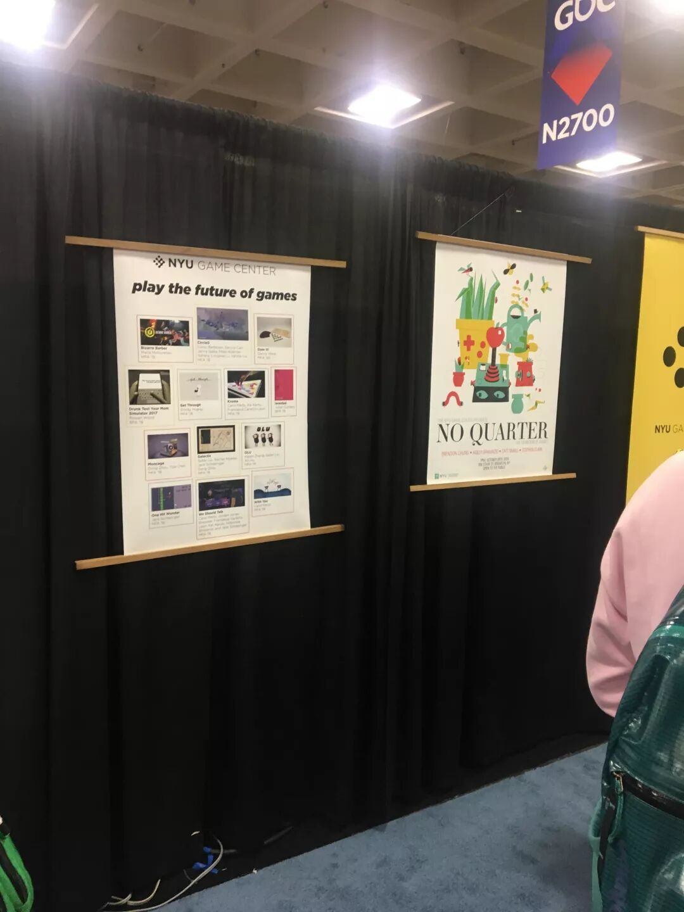
NYU的游戏专业也蛮好的，我查了一下似乎目前是第8
好玩的小游戏
最后最重要的当然是游戏本身了。写到这边我已经有点精疲力尽，就推荐游戏吧。
我个人不是很看重游戏的画面等等，比较喜欢那种有有意思创意的，或者是爽快的对战类游戏。
这款WinKings的游戏蛮好玩的，我在站台上坐下来试玩了一下就停不下来了。不过回到家以后手机上下了一个，操作感很差。看来欧美的游戏公司还没学会国内王者荣耀，刺激战场等的优秀手游摇杆设计啊。
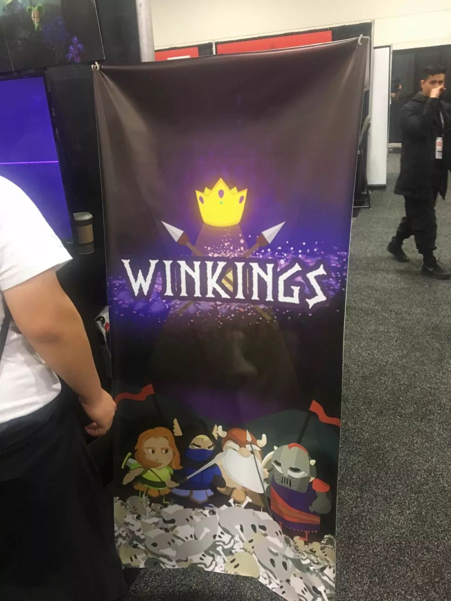
这款游戏看似是一款简单的横版过关游戏，几个玩家看谁跑得快。
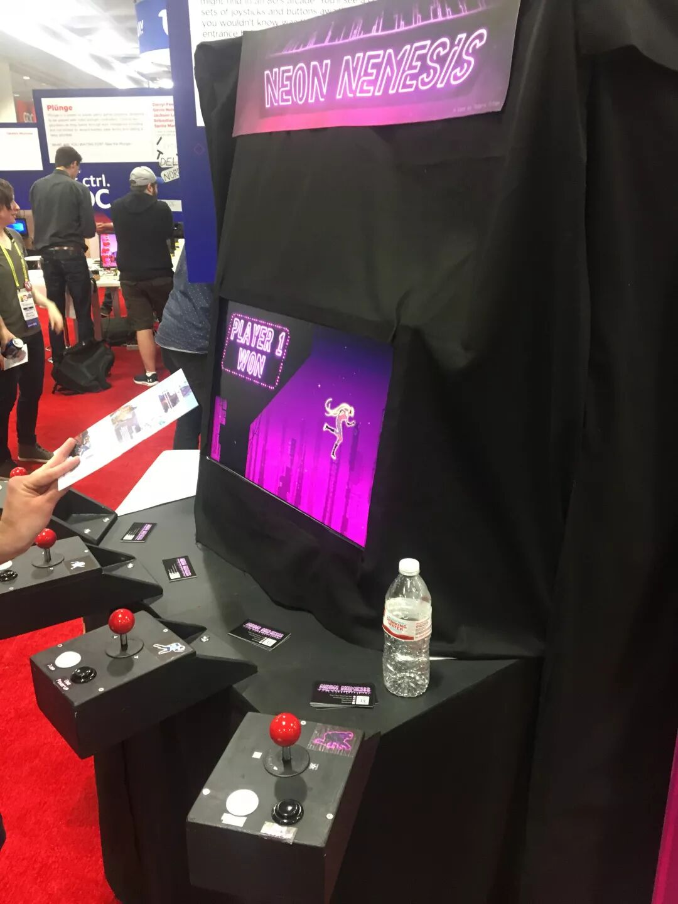
其实背后还有个房间，给另外一个玩家控制障碍物用的。这下你知道为啥你老是被砸到了吧。
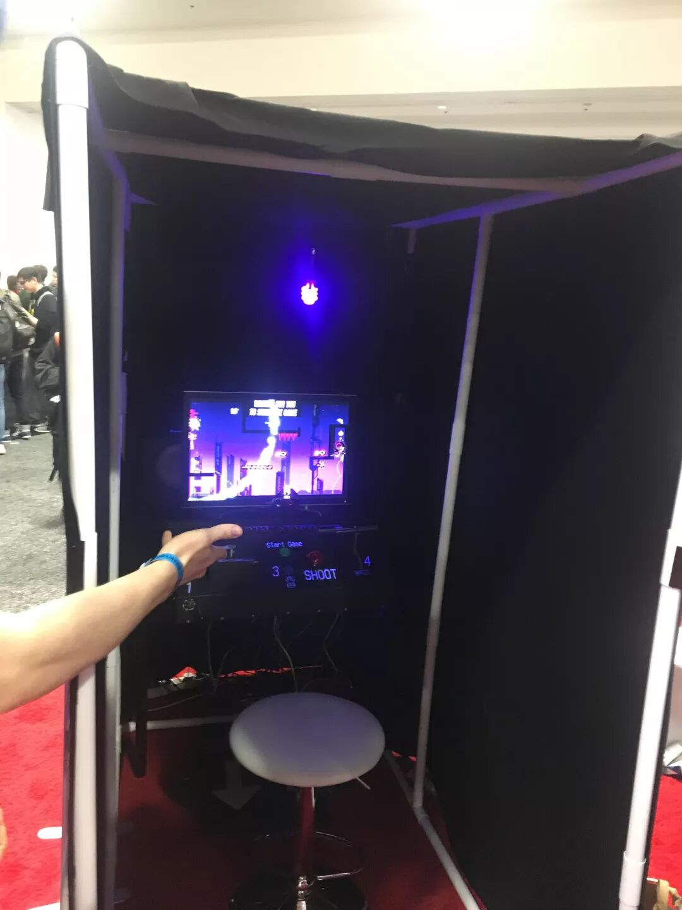
这是一款比比谁画的世界名画更像的对战游戏。
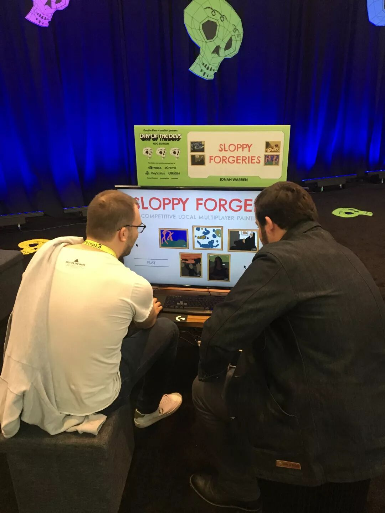
一款爽快的街头足球游戏，让我想起早年国内的一款街头篮球的网游，真的好玩。
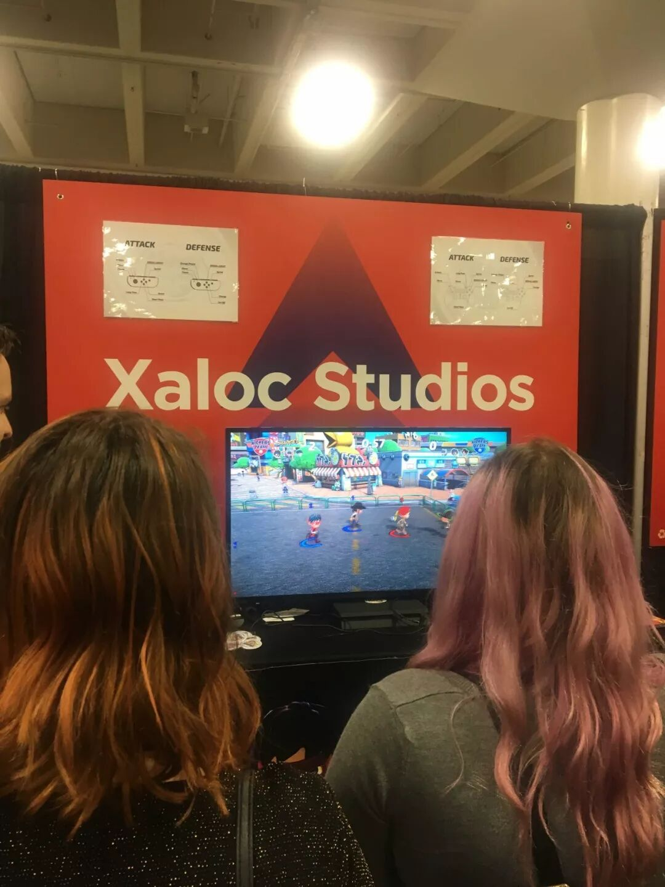
其他
还有好多好玩的没说，比如微软搞了个很大的展区，里面有专人教大家玩微软设计的桌游= =
还碰到一个叫Embody的公司，他们做了一个软件，给你的耳朵拍一张照片，他们就可以用算法帮你生成出最适合你耳朵形状的声音。据说用了他们的这个软件，墙后面的敌人站那儿都一清二楚，宛如开挂。
我试用了一下，根本没有卵用= =，声音完全听不出来区别。本来我们玩吃鸡的就可以听声辩位好吗。
在周五的时候我还去参加了国内独立之光办的北美留学生Indie沙龙，碰到那么多在做独立游戏的中国人还是很开心的。
全文完。
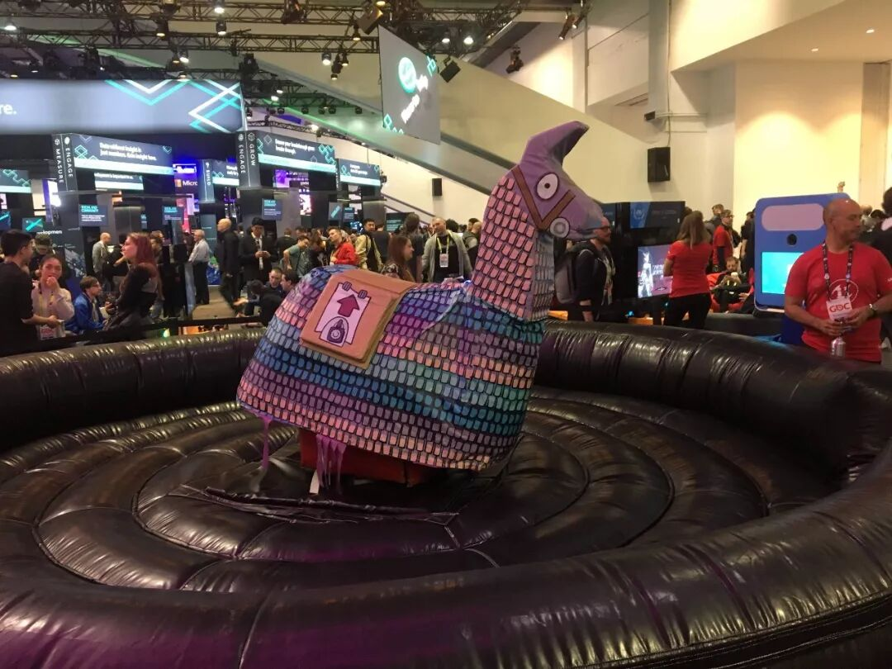